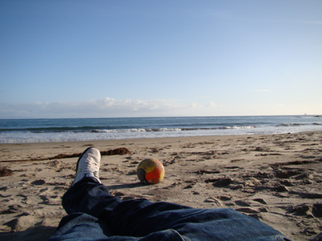

The danish tourist
Well, another week gone... mostly working but still enjoying myself in ‘sunny’ california. The weather have been sort of okay even though  it has been raining quite a bit, the wind is kind of cold and the ‘natives’ say that I chose the worst week to come. But 20 degrees in the sun and 70% sunshine is way better than snow and cold in Germany. Actually they say that it has been snowing like hell in Heidelberg the last week ... wait a second - can it snow in hell? Well I guess you get the point.
it has been raining quite a bit, the wind is kind of cold and the ‘natives’ say that I chose the worst week to come. But 20 degrees in the sun and 70% sunshine is way better than snow and cold in Germany. Actually they say that it has been snowing like hell in Heidelberg the last week ... wait a second - can it snow in hell? Well I guess you get the point.
As I said most of the week Phil and I have been working hard to get the most out of the time we are together, therefore a lot of hours have been spend indoors in front of my laptop. But luckily there have been time to socialize a bit in the evenings. Tuesday we went to a dinner party at Phil’s girlfriends house, where her and her roommates had made some cherizo-thing wrapped in bacon, which was really good. We sad around their dining table, enjoying the food, drinking some beers and had several good laughs. 
Wednesday I joined Phil’s soccer team for a couple of hours of training. Unfortunately Phil was ill so he didn’t join - maybe next wednesday... I borrowed a pair of football shoes from Phil and gave it all I got. Thursday and friday a was reminded that it has been a long time since I have played soccer regularly -  I was sour in ALL of my body - but it was still worth it, and if my blisters are all right wednesday I’ll join them again. Friday night we went out for burgers at Paradise Café. Phil had lost a bet to his boss so he owed him a couple
I was sour in ALL of my body - but it was still worth it, and if my blisters are all right wednesday I’ll join them again. Friday night we went out for burgers at Paradise Café. Phil had lost a bet to his boss so he owed him a couple  burgers, which I then joined in on. The burgers were good but the fries were horrible - but I guess the burger is the important part here! We had a coupe of red stripes (a jamaican beer which is quite) before we went home early after a long weeks work were we definitely ‘earned our beers’.
burgers, which I then joined in on. The burgers were good but the fries were horrible - but I guess the burger is the important part here! We had a coupe of red stripes (a jamaican beer which is quite) before we went home early after a long weeks work were we definitely ‘earned our beers’.
Yesterday I went to a farmers marked downtown Santa Barbara were I tasted the best orange I’ve ever got (I think). At noon I teamed up with  Phil and helped a couple of friends of his moving in to their new house in SB. When we had emptied their moving truck, Phil, Emily and I drove north so I could take a dive in the pacific and finally get my shorts wet. It was cold but not that cold; I am after all a viking from the north... sort of;) After my dive and Phil’s nab we drove Solvang for
Phil and helped a couple of friends of his moving in to their new house in SB. When we had emptied their moving truck, Phil, Emily and I drove north so I could take a dive in the pacific and finally get my shorts wet. It was cold but not that cold; I am after all a viking from the north... sort of;) After my dive and Phil’s nab we drove Solvang for  tea and danish pastry. Solvang is a REALLY ‘tacky’ danish-immigrants-not-beeing-able-to-let-go-of-denmark town in eastern california. We had some danish pastry at Mortensen’s bakery were they had decorated with posters from Ærø and posters of queen Magrethe and her husband - really weird but kind of funny to. When we came back to Santa Barbara we went
tea and danish pastry. Solvang is a REALLY ‘tacky’ danish-immigrants-not-beeing-able-to-let-go-of-denmark town in eastern california. We had some danish pastry at Mortensen’s bakery were they had decorated with posters from Ærø and posters of queen Magrethe and her husband - really weird but kind of funny to. When we came back to Santa Barbara we went  out for beers and steaks with the guys we helped move in.
out for beers and steaks with the guys we helped move in.
Today I have taken it really slow. Went to ‘the Mission’ (an old monastery from the 1780s) and did a bit of shopping on State st. Before I went back to the hotel I had a sandwich at the beach enjoying the sun - I don’t think I would have a problem living here.
I don’t think I would have a problem living here.
Since I came back to the hotel this afternoon I have just been chillin’ to some telly. Tomorrow the work will continue until thursday where Phil and I will drive to Tucson, AZ which is gonna be really cool. US and road-trips just go great together;)
Thanks for your comments on my last entry - keep ‘em coming.
EARN YOUR BEERS!

Tourist - indeed ;)
Monday, 16 February 2009
